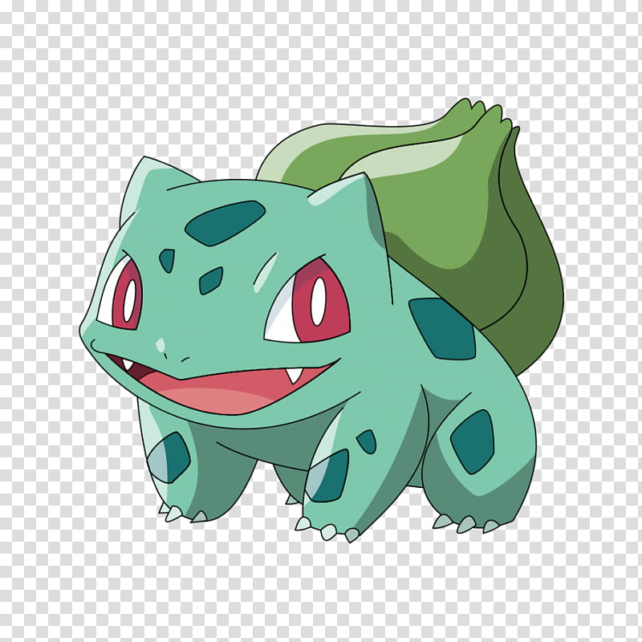

| ID | Nombre | Foto | Especie | Tipo | Habilidades | Stats |
|---|---|---|---|---|---|---|
| P1 | Bulbasaur |  | Seed Pokémon | PlantaVeneno |
| PS: 45 Ataque: 49 Defensa: 49 Velocidad: 45 Ataque Especial: 65 Defensa Especial: 65 |
| Nombre | Apellidos | Edad | Fecha de Nacimiento | Lugar de Nacimiento | Pokémon | Mote | Género | Fecha de Captura | Tipo de Pokéball |
|---|---|---|---|---|---|---|---|---|---|
| Ash | Ketchum | 10 | 22/septiembre/2014 | Pueblo Paleta |
| Bulbasaur | Masculino | 1/enero/2024 | UltraBall |